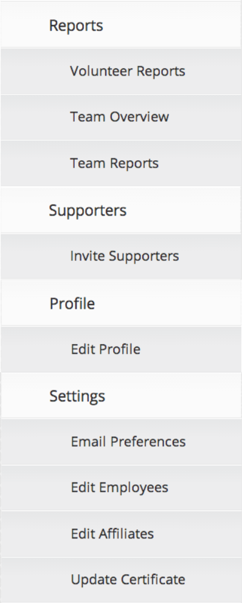

|  |
Hover over a menu element on the left to learn more about it.Generate custom, saveable reports on your non-profit’s volunteers and employees. Apply many filters, including by hours volunteered, opportunities attended, and within certain date ranges. If you’d like more detailed or customizable reports, contact the GoVo team at nonprofit@govoluntr.com. View and invite new supporters via email. Alert your supporters of your presence on GoVoluntr, and encourage them to create a free account and check it out! View and edit your non-profit’s profile. Edit your profile picture, basic information, mission statement, and more. View links to your employee's profiles and total number of hours volunteered. Adjust your email preferences, edit your nonprofit’s employees and affiliates, and upload your 501(c) certificate so GoVo can verify your nonprofit’s status. |
That's it for GoVoluntr basics. Congrats on getting through the tutorial! We're excited to see what you can bring to your community.
If you have any questions, comments, or concerns, email the GoVo team at nonprofit@govoluntr.com. Have fun, and as always, work hard, play harder, and GoVoluntr hardest!